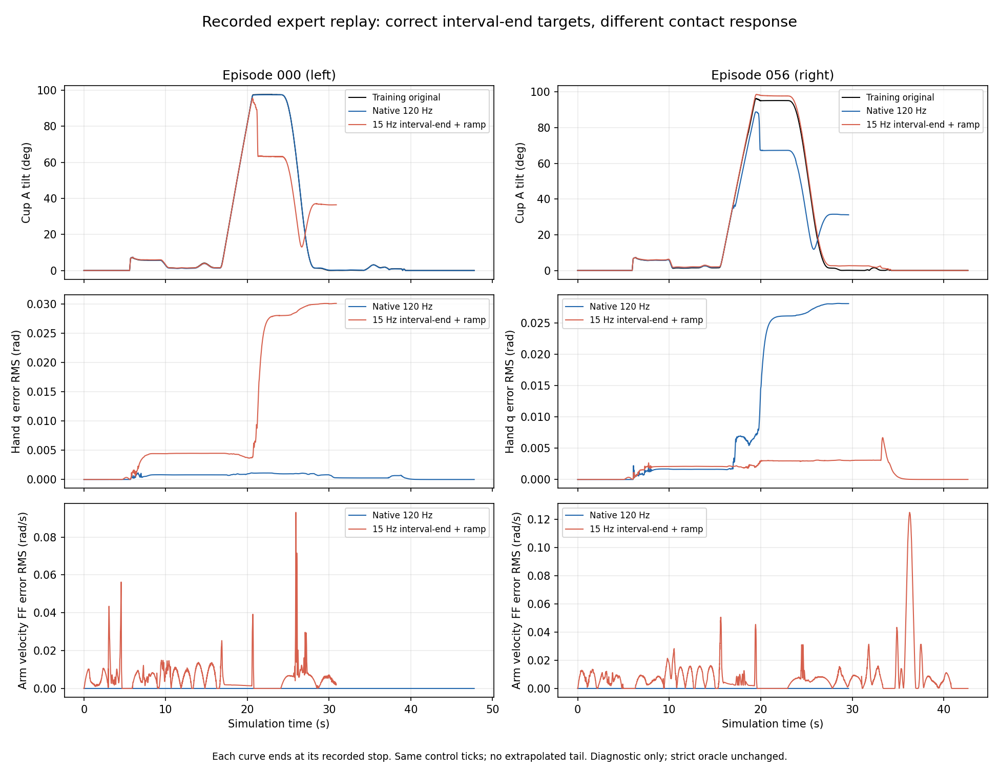

全部重算为 diagnostic / rescored_v1.1_candidate；候选尚未采用，不替换strict-v1。新的Mem-0与TTC阶段B任务先挂pending，完成配置后才发布成功率。不能把D0（PIL）当作公平的Mem-0训练缩放对照。
| 判定 | TTC trainresize | Mem-0 D0 PIL | 配对差及分层bootstrap95% | 双方成功 / 仅TTC / 仅Mem-0 / 双方失败 |
|---|---|---|---|---|
| strict-v1 | 40/100 | 24/100 | +16pp [5,27] | 13 / 27 / 11 / 49 |
| 位姿候选 | 62/100 | 35/100 | +27pp [16,38] | 24 / 38 / 11 / 27 |
| 0.5秒平均角速对照 | 58/100 | 32/100 | +26pp [15,37] | 21 / 37 / 11 / 31 |
strict左右：TTC20/50、20/50；D0为0/50、24/50。候选左右：TTC30/50、32/50；D0为0/50、35/50。TTC在两个口径中均高于D0，但尚须等待Mem-0 trainresize的同代际公平对照，不能据此宣布模型全面领先。
bootstrap固定种子10350601，20000次，左右场景分层，配对已逐项校验(side,scene_seed,model_seed)。完整配对表与区间。
另：TTC原版与trainresize的早期比较跨R4运行时代际，不能将全部增益单独归因于缩放。
| 配置/子集 | n | 严格原成绩 | 位姿候选成功 | 平均角速对照 | 重算unknown |
|---|---|---|---|---|---|
| ttc_trainresize|h4 | 100 | 40 | 62 | 58 | 0 |
| ttc_trainresize|h8 | 100 | 39 | 62 | 54 | 1 |
| ttc_original|h4 | 100 | 19 | 20 | 19 | 0 |
| ttc_original|h8 | 100 | 11 | 17 | 16 | 0 |
| d0|h4 | 100 | 24 | 35 | 32 | 0 |
| latest_phase2_timeout|h4 | 141 | 0 | 42 | 33 | 0 |
| latest_phase2_timeout|h8 | 145 | 0 | 46 | 26 | 0 |
latest两行仅是“已倒入但超时”的141/145条子集，不能当作完整500条的新成功率。全部73条缺失日志已从BOS按原SHA恢复，候选分别确认42与46条完成。TTC h8有1条原oracle重构不一致，保守列unknown；其100条分母保留，phase_hist只含99条，均值只按99条计算。原来的39/100严格成绩未被修改。
归档恢复后7931条可重算，69条仍缺可定位原始trace，保持unknown，不外推。原始严格成绩不变；每行分母500，候选仅诊断。完整阶段分布与均值。
| 方法|数据|ckpt|h | n | 原严格成功 | 位姿候选 | 平均角速 | unknown |
|---|---|---|---|---|---|
| mem0|v13|30000|8 | 500 | 96 | 163 | 145 | 0 |
| mem0|v13|30000|4 | 500 | 124 | 197 | 178 | 0 |
| mem0|latest|30000|4 | 500 | 65 | 107 | 98 | 0 |
| mem0|latest|30000|8 | 500 | 64 | 112 | 90 | 0 |
| mem0|v13|20000|4 | 500 | 76 | 112 | 100 | 0 |
| mem0|v13|20000|8 | 500 | 65 | 91 | 86 | 0 |
| mem0|latest|20000|4 | 500 | 6 | 10 | 9 | 0 |
| mem0|latest|20000|8 | 500 | 4 | 9 | 9 | 0 |
| ours|v13|20000|8 | 500 | 20 | 31 | 27 | 0 |
| ours|v13|20000|4 | 500 | 16 | 28 | 26 | 0 |
| ours|v13|30000|4 | 500 | 78 | 109 | 102 | 0 |
| ours|v13|30000|8 | 500 | 73 | 106 | 98 | 0 |
| pi05|v13|20000|4 | 500 | 0 | 0 | 0 | 0 |
| pi05|v13|20000|8 | 500 | 2 | 3 | 2 | 1 |
| pi05|v13|30000|8 | 500 | 0 | 0 | 0 | 43 |
| pi05|v13|30000|4 | 500 | 0 | 0 | 0 | 25 |
10条训练episode全部有效15Hz区间逐项核对：回放target[min((frame+1)*8,N-1)]与parquet的action.joint_position_target_chunk_120hz[last_valid]最大误差均为0，action_is_pad已排除；前后偏移一tick都有非零误差。不存在误用action首步或差7tick的证据。
原生回放的位置/速度命令与原示教逐位一致；手部实测仍出现漂移。端点回放的目标插值误差约1e-4rad，手部实测RMSE约1e-2rad，手臂速度前馈与原记录RMS差约0.008–0.010rad/s。RMS采用各自已记录的前缀，停止时刻不同，不外推缺失尾段。
更正：full_native_safety_violation不是“碰撞”的同义词。核对的8例最小接触间距为0、spill=0；失败是A仍倾斜31–36°时越出70mm倾倒包络。同控制tick的原训练杯已直立约0.1–0.2°；杯体位置差约14–18mm。这是杯体接触/滑转复现差异，不能仅归因于静止计时，也不能通过放宽安全包络消除。六维手部PD增益、阻尼与原记录一致，源hand速度FF均为0；未发现漏播的已记录手部力矩字段。
前一轮20条专家重算：原生3/10→6/10，端点0/10→1/10。现已在既有物理Pro6000单卡N1×3独立复测20条；严格与候选逐条阶段报告待全部完成。首次重启因4个支持资产被归档而在仿真前失败，20条记infra unknown；97个冻结文件现已恢复到新的独立目录并逐SHA核验，不修改共享源、不计作模型失败。
V13执行器使用全部100条，左50/右50；标签与初始布局逐条一致，元数据split为0:100。左rank0–49，右50–99。两侧A均为独立XY±1cm，B固定，每侧只有一个固定垫位布局。Planner自身90/10划分与执行器全100条训练不同；没有证据支持“执行器没训左侧”解释。

左episode0是端点链滑转，右episode56则是原生链滑转；接触敏感性尚不能归咎于单一执行链。低优上限16卡：Mem-0 V13 trainresize冒烟→A（4卡、N1×3）；latest渲染+训练缩放修复冒烟→A（4卡、已准入N1×2）；TTC-trainresize阶段B各推理seed的200条分成独立4卡任务，seed1/2先行、seed3/4排队。阶段B汇总保留seed0原A100条/步数，不重跑；A/B计划的条件标签别名已在记录中列明，原接触源/控制/缩放代码一致。专家占用既有物理机1张卡，并非新增低优租卡。
所有恢复作业先验证独立支持树97个SHA；旧unknown保留、无完整验收者不冒充失败。最近完整10分钟、各任务全4卡持续均值：Mem-0 V13 62.35%（冒烟尾部和A切换窗口）、latest 92.20%、TTC seed1 72.65%、seed2 70.98%。TTC显存峰值约43–48GB/卡，CPU约占80核配额的12–13%。已启动真实V13渲染N1×4的0/50帧准入；仅通过后，新seed3/4采用N1×4，当前运行任务保持原拓扑。历史原始日志最新清点缺1807条，现全部按SHA恢复到新目录；8000条全量CPU重算和归档恢复合并已完成，69条仍缺原始trace且保留unknown；原严格成绩不改。
最新已验收进度：Mem-0 V13冒烟20/20（严格8成功），A为15/200；latest冒烟18/20；TTC B seed1为36/200、seed2为30/200。均无本批基础设施失败；未完成配置success=null。带采样时间的完整进度。
TTC h4/h8各8例，D0 h4为8例；h4优先共享同8个scene。D0左侧无成功，实际取右4成功+左4失败，未虚构左成功。所有视频H.264/yuv420p/faststart、完整时长，最大1,670,898字节；逐帧18271行全部schema通过。score/count缺失为null，切换帧分数保留前指令归属，物理事件保留120Hz精确时刻。
授权BOS/TOS来源只确认read_write，尚无稳定公开域名/键映射。已向指定BOS媒体前缀写入不含敏感内容的探针，匿名HTTPS返回403且无CORS头；未改bucket ACL，未使用签名URL或把批量视频塞进Pages。故media/index.json暂不登记失效链接，需提供已授权公开只读HTTPS前缀及CORS映射后再发布清单。
便携统一CPU重算包（包含冻结oracle、阈值、包装器及SHA清单，独立进程输出与原实现一致），供pi0.5等复用。
脚本SHA256 bde303cc27dece953f0898c226aee9cf4aab8c7102b3147e96a1cdc4a107b044；阈值SHA256 d841c5ccb7f0c728c6506083d3ab227a8b38250147b79f9e5e8fcf4d439f62aa。阈值冻结于成功重算之前；负例视频审核及候选正式采用仍待完成。